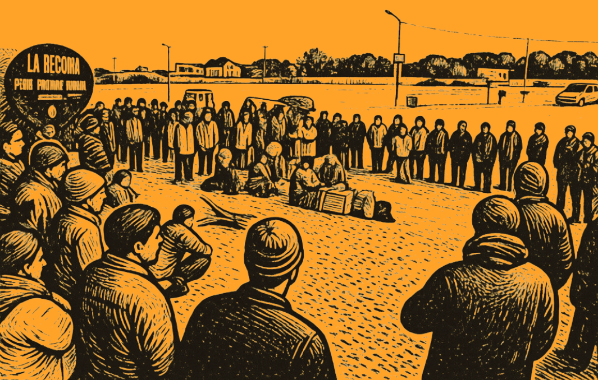

Este ensayo surge de mi investigación doctoral sobre el conflicto en torno a la expansión inmobiliaria turística en Chapadmalal (provincia de Buenos Aires) entre 2019 y la actualidad. En particular, me interesa analizar las formas de compromiso político vecinal que emergieron frente al avance de un modelo de reproducción del capital inmobiliario-turístico en el área. Cabe destacar que esto se ha acentuado por medio de políticas de excepción y por una articulación y colaboración estrecha entre intereses del poder estatal y sectores empresariales.
Cuando los vecinos “se plantan”
Uno de los aspectos que abordo en mi investigación es el compromiso político vecinal desplegado a raíz del conflicto identificado, desde el marco de las sociologías pragmáticas (Cefaï, 2011; Boltanski y Thevenot, 1999), específicamente a partir de las categorías propuestas por Melé (2016) en referencia a la productividad social (política, territorial y jurídica) que emerge del conflicto. Las sociologías pragmáticas hacen foco en los saberes y competencias que los actores, en este caso, vecinos constituidos en asamblea, despliegan en los contextos de acción en torno al conflicto. Se trata de una capacidad inherente al actor que le permite entender la situación, criticarla y expresar argumentos para que otras personas (los públicos en torno al problema) se sensibilicen acerca de una situación definida como injusta y tomen partido.
Las sociologías pragmáticas hacen foco en los saberes y competencias que los actores, en este caso, vecinos constituidos en asamblea, despliegan en los contextos de acción en torno al conflicto. Se trata de una capacidad inherente al actor que le permite entender la situación, criticarla y expresar argumentos para que otras personas (los públicos en torno al problema) se sensibilicen acerca de una situación definida como injusta y tomen partido; y es un saber pragmático integrado por conocimientos de la vida cotidiana y aquel de tipo experto o técnico, desplegados en la situación de conflicto. En este sentido, los actores asamblearios realizan operaciones de traducción del problema público en gramáticas acordes a los momentos y contextos implicados (en este caso: el barrio, los medios de comunicación, los ámbitos político, judicial y académico, entre otros) (Nardacchione y Acevedo, 2013).
En este marco, mi investigación se apoya en la premisa de seguir a los actores en el curso de sus acciones, a partir de una aproximación etnográfica al conflicto, para dar cuenta de sus contextos de experiencia y comprender la acción en situación (Cefaï, 2011). De este modo, el trabajo de campo que vengo realizando desde 2021 incluye observación participante multisituada junto a los actores asamblearios: en el barrio, en la playa, en la reserva, en el hogar, en la feria, en dependencias administrativas municipales y provinciales, en audiencias judiciales, entre otros espacios.
En función de los avances en mi trabajo, el presente ensayo busca recuperar algunas críticas frecuentes hacia las formas de acción política autónoma —en particular las configuraciones asamblearias— y poner en tensión los argumentos que cuestionan su capacidad para generar transformaciones sociales significativas. Además, se busca brindar contrapuntos a estas afirmaciones y supuestos, para propiciar debates respecto de este sujeto político en construcción, su actualidad e incidencia en la política local y nacional. Finalmente, y para no quedar situada en una postura romántica, se reconocen las limitaciones que estos grupos poseen en su capacidad de auto reproducción, acción e influencia.
Si, pero… ¿logran algo?
En cuanto a las críticas al compromiso político autónomo en formato asambleario, se destaca la alusión a su falta de conexión con la política instituida. En este sentido, se considera que, al no disputar la hegemonía en la conducción del Estado, difícilmente puedan generar una estrategia articulada que permita generar cambios sociales significativos. También, se alude a su carácter desarticulado y localista, cuyo accionar puede obstaculizar políticas y proyectos que se definen como generadores de empleo y desarrollo.

También, se alude a su carácter desarticulado y localista, cuyo accionar puede obstaculizar políticas y proyectos que se definen como generadores de empleo y desarrollo. Asimismo, una parte de las críticas se centra en la falta de estructura y formalidad de estos espacios, ya que no se identifican con organizaciones de la sociedad civil tradicionales, sino que constituyen otra especie: no poseen representantes, en tanto la asamblea se constituye en soberana; esto implica algunas dificultades para desempeñarse como interlocutores en ámbitos gubernamentales y otros sectores que dialogan mejor con el formato clásico de asociación civil o directamente no los reconocen y validan como sujetos colectivos.
Otro señalamiento tiene que ver con la racionalidad ambiental que caracteriza el accionar asambleario en los últimos años, esto se ha manifestado en la opinión oficial del gobierno nacional que recientemente se refirió a estos grupos en forma despectiva como “ambientalismo idiota que frena el desarrollo” (La política ambiental, 2025). En este punto, resulta pertinente recuperar la noción de consenso extractivista (Svampa y Viale, 2020): más allá de las diferencias entre regímenes políticos, el arco político de gobierno comparte la idea de imposibilidad de resistencia al modelo extractivo, que sutura la posibilidad de debate y obstaculiza pensar alternativas.
Un sujeto otro
Respecto de estos argumentos, traigo algunos contrapuntos que sirven al debate y a la vigilancia epistemológica, por un lado, las asambleas ciudadanas son sujetos políticos “otros” y no deberían ser analizadas con las mismas categorías con las que se observa y se mide la acción en términos de política instituida. Su carácter autónomo es parte constitutiva de su particular configuración y es una elección política en sí misma. Su razón de ser está orientada a sostener el antagonismo y abrir nuevos horizontes de posibilidad (Modonesi, 2010).
Por otro lado, los resultados de su acción pueden no ser inmediatos e incluso no ser previsibles. En este sentido, sobre la base de un cambio de paradigma desde uno lineal hacia uno basado en la complejidad, se hace evidente la necesidad de evitar la racionalidad causa-efecto para intentar aceptar el carácter indeterminado de la acción social en términos de resultados o efectos (Latour, 2008; Cefai, 2011).
En línea con lo anterior, en relación con la dimensión temporal, cabe destacar que las asambleas se rigen por una temporalidad extendida en el tiempo, sostenida por la experiencia colectiva y que busca desarrollar dimensiones vinculadas a la reproducción de la vida. Por nombrar algunas cuestiones: hay una política de cuidado del vínculo y de construcción de comunidad en el entorno situado, y se ejercita la democracia al tomar decisiones por consenso y propiciar el respeto por las diferencias, lo que Gramsci denominó política prefigurativa (Ouviña, 2008 y 2013). Lo anterior se diferencia de los tiempos y dinámicas, generalmente urgentes y basadas en resultados cuantificables, de la política instituida.
Por otro lado, estos grupos parten de bases epistemológicas diferentes para pensar la vida y el vínculo humano-naturaleza, irrumpen con otros marcos de racionalidad cuando se presentan en reuniones y audiencias públicas, poniendo en tensión aquello que es considerado “enunciable” en estas instancias, y esas argumentaciones permean sus repertorios de acción. Aquello que traen de novedad al campo de la política es posteriormente metabolizado por esta e incluso es generador de productividad política y jurídica, como, por ejemplo, los derechos de la naturaleza (Azuela y Cosacov 2013; Mele, 2016; Acosta y Viale, 2024).
Las asambleas ciudadanas poseen una racionalidad práctica que se ejerce a partir de conocer la posibilidad que brinda el encuadre ambiental de los conflictos y el empleo de la gramática jurídica ambiental. En este sentido, apelan a la ventanilla judicial y al plexo normativo en la materia y a figuras estratégicas de participación ciudadana tal como el amparo, para traducir el conflicto al lenguaje jurídico y así poder articular demandas particulares (Arcidiácono y Gamallo, 2024; Azuela y Musetta, 2009).
Por otro lado, y volviendo a la cuestión de su impacto político, se les atribuye el carácter de ser actores clave en la defensa de los territorios, ser la principal resistencia a los extractivismos En este sentido, construyen lenguajes de valoración diferentes (Martínez Alier, 2021): lo que para la gramática desarrollista se expresa en términos de recursos a explotar para generar crecimiento económico y bienestar social por medio de políticas redistributivas, las asambleas socioambientales lo refieren en términos de bienes comunes esenciales, porque constituyen la base de la sostenibilidad de la vida y de la implementación de formas alternativas de desarrollo (Svampa y Viale, 2020; Aranda, 2025).
Respecto de la contradicción entre protección de bienes comunes y obstaculización al acceso del empleo y al desarrollo local, cabe destacar que se trata de la crítica social más arraigada a la racionalidad ambiental de las asambleas. En este sentido, existe evidencia científica que argumenta que los modelos extractivistas no son generadores de los beneficios prometidos en términos de empleo y desarrollo local (Svampa y Viale, 2020; Svampa, 2025)
Ahora bien, existen aspectos que dificultan la propia reproducción de estas organizaciones autónomas. En primer lugar, las personas deben garantizar condiciones materiales de existencia, y en un contexto social exacerbado de “sálvese quien pueda y cómo pueda”, este trabajo se resuelve en términos individuales. En situación de crisis agudizada, el tiempo dedicado a la construcción de lo político referido a proyectos de planificación y uso del territorio habitado y preservación ambiental y del patrimonio, puede mermar o ser utilizado en el sostenimiento de redes de acción colectiva vinculadas a garantizar condiciones básicas de reproducción de la vida.
Cabe destacar que las asambleas ciudadanas no constituyen colectivos con identidad y pensamiento homogéneo, sino que son contenedores de pluralidad. Esta fortaleza, en términos democráticos, implica ciertos desafíos cuando existen diferentes intereses y posicionamientos políticos de base, visiones contrapuestas respecto del horizonte de acción y del rol que están llamados a cumplir. Se suman las dificultades para anteponer la decisión de conjunto a la mirada personal. Todo esto da cuenta del carácter complejo de la construcción de consensos, componente básico para la acción asamblearia.
Finalmente, en línea con el planteo de Rosanvallón (2007), estas asambleas forman parte de la contrademocracia, una forma democrática contrapuesta a la electoral-representativa, conformada por poderes indirectos que se encuentran en la sociedad y que articulan la desconfianza organizada frente a la democracia electoralmente legitimada: constituye su contrapeso y debe ser analizada como una forma política en sí misma.
Asambleas de Chapadmalal y la disputa por lo común
En Chapadmalal se observa, en los último quince años, el crecimiento del formato asambleario vecinal con el propósito de poder articular demandas hacia el Estado en referencia a la privatización del espacio público de playa y reserva, la contaminación ambiental y la ausencia de participación ciudadana vinculante en proyectos de intervención del espacio.
En este sentido, se destacan las asambleas “Luna Roja”, fundada en 2019, y “Por los Bienes Comunes de Chapadmalal”, fundada en 2025, por ser las que en la actualidad condensan las trayectorias de aprendizajes y acción colectiva de experiencias previas y articulan demandas con otras asambleas ciudadanas y organizaciones de la sociedad civil del Partido de General Pueyrredon y de la costa atlántica bonaerense.

A su vez, es importante aclarar que, en las asambleas analizadas, la mirada que poseen del Estado es inclusiva de la sociedad civil, y su compromiso político reside, en gran parte, en conocer la normativa que regula el territorio, velar por su cumplimiento e incluso proponer modificaciones y nuevas normas, lo que se conoce como calificación jurídica del espacio y actualización local del derecho (Melé, 2016). En este sentido, consideran que el contrapeso que ejerce la ciudadanía cuando ocupa su espacio y asume el compromiso de ser contralor de la acción gubernamental al exigir un comportamiento centrado en normas y alejado de la acción discrecional, permite fortalecer la democracia. Por lo que, lejos de tener una postura anárquica, el antagonismo que sostienen valida la figura del Estado.
Además, el accionar de las asambleas es propositivo en lo que respecta de formas alternativas de habitar el territorio y gestionar los espacios, entre ellos aquellos de uso turístico-recreativa (como las Unidades Turísticas Fiscales) para lo cual apelan a figuras de protección ambiental formalmente instituidas (Asamblea por los bienes Comunes de Chapadmalal, 2025) como así también al recupero de espacios públicos (Cacciutto, 2026).
A modo de consigna
La productividad política que emerge del conflicto por la expansión inmobiliaria y turística en la zona se relaciona con la capacidad que han tenido las asambleas de Chapadmalal de ir construyendo y consolidando un sujeto político que encarna el antagonismo, al cuestionar el orden establecido y reproducido de gestión estatal-privada de los espacios públicos para su uso turístico-recreativo en esta zona costera del partido de General Pueyrredón. Por lo tanto, la fundación y organización de las asambleas mencionadas son un aporte sustancial en la búsqueda de justicia ambiental y espacial.
Referencias bibliográficas
Cefaï, D. (2011). Diez propuestas para el estudio de las movilizaciones colectivas. Revista de Sociología, 26.
Melé, P. (2016). ¿Qué producen los conflictos urbanos? En Carrión & Erazo (Coords.), El derecho a la ciudad en América Latina.
Modonesi, M. (2010). Subalternidad, antagonismo, autonomía. CLACSO.
Ouviña, H. (2013). La política prefigurativa de los movimientos populares. Acta Sociológica, 62.
Rosanvallon, P. (2007). La contrademocracia. Manantial.
Svampa, M., & Viale, E. (2020). El colapso ecológico ya llegó. Siglo XXI.
Asamblea por los Bienes Comunes de Chapadmalal (2025). Proyecto de reserva provincial.
Cacciutto, M. (2026). “Alambraron hasta el arroyo”. Scripta Nova, 30(1).